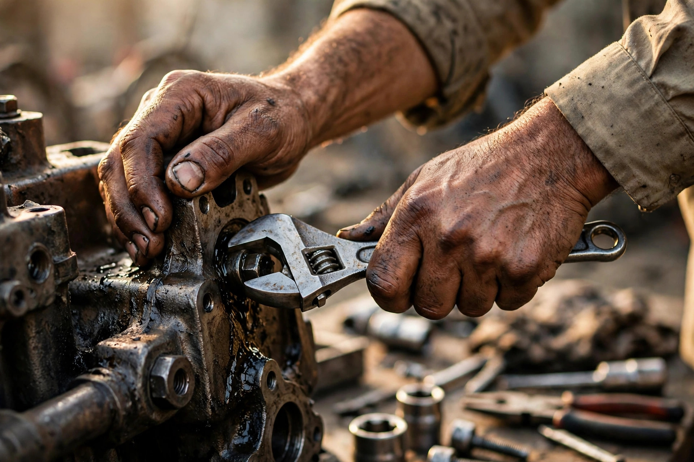
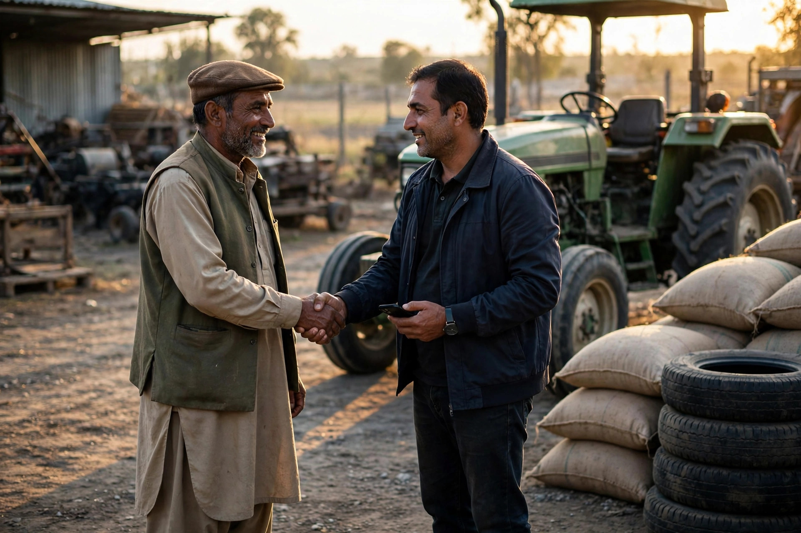

Chowk Azam’s economy rests on the land around it. Grain traders buy and sell the harvest, dealers supply seed, fertiliser and spray, and machinery sellers and workshops keep tractors and implements working through the season. These are high-value decisions. A farmer choosing where to sell wheat, which dealer stocks genuine parts, or who can repair a harvester before the weather turns will ask around, and increasingly he also searches on Google, often the night before he travels into town.
That search is where this article focuses. SEO for agriculture and machinery businesses is about being visible, accurate and trusted at the exact moment a farmer is comparing dealers. The steps are practical: a proper Google profile, pages and descriptions written around crops and machines, seasonal timing, and reviews from real farming customers. Zaheer Seo Expert is based in Layyah and works with Chowk Azam businesses online and by phone, so dealers can get this help without leaving the market during busy weeks.
How Farmers Actually Search for Dealers
Farmers rarely type formal business language. They search for the crop, the machine or the problem: a dealer for a crop, a brand of tractor parts, a workshop that repairs a particular implement, or fertiliser available near Chowk Azam. Many searches happen on phones, in Urdu or in simple Roman words, and many include near me because the phone knows the location. Your online presence must match this behaviour, not the wording on your letterhead.
Timing matters as much as wording. Enquiries rise before sowing, peak during harvest problems, and follow the mandi calendar. A dealer whose profile and pages mention the right crops, machines and services ahead of each season is ready when the searches come. Our overview of SEO services in Chowk Azam shows how this seasonal planning fits into a wider local strategy.

The Google Profile for a Grain or Machinery Business
Choose your category with care, because agricultural dealer, farm equipment supplier and grain wholesaler tell Google very different things. Add every service you genuinely offer: machinery sales, spare parts, repair, grain purchasing, input supply, delivery to villages. If you buy grain, say so plainly, since farmers search for buyers as often as sellers search for stock.
Photos should show scale and seriousness: the yard with machines lined up, the godown, weighing arrangements, branded parts on shelves, and your team loading or repairing. Farmers judge a dealer’s substance quickly, and real photographs answer better than any slogan. Keep hours honest during harvest season, when many dealers open early and close late, and update them when the season ends.
Pages and Words Built Around Crops and Machines
If you have a website, give each major line its own page rather than one long list. A page for tractors and implements, a page for spare parts, a page for grain trading, and a page for repair services each match a different kind of search. Write about the brands you actually deal in, the crops you actually buy, and the villages and areas you actually serve. Specific, true detail is what separates a useful dealer page from a generic one.
Where you have no website yet, the same detail belongs in your profile description and posts. Mentioning the machinery brands on your shelves and the seasons you prepare for helps Google connect your business to the right searches. The thinking behind choosing these words is explained further in our article on local keywords Chowk Azam customers use.
- One page or section per major line of business
- Real brands, crops and services named plainly
- Areas and villages you genuinely deliver to or buy from
- Seasonal updates before sowing and harvest

Trust Signals That Matter in the Farming Community
Agriculture runs on trust built over seasons, and online signals work best when they mirror the real ones. Reviews from farmers carry weight, especially when they mention fair weighing, honest grading, genuine parts or a repair finished on time during a breakdown. Ask for them after a job goes well, and reply with the same courtesy you would show at the shop.
Consistency is another signal. Your business name, phone number and market location should read the same on your profile, website, and any directory listing. In a market where several dealers share similar names, this consistency also prevents customers calling the wrong shop. Finally, answer the phone. A dealer who is easy to reach during a harvest emergency earns the kind of reputation that reviews only record afterwards.
Reaching Villages Around Chowk Azam
Many of your customers live outside the town, in the villages and chaks of Layyah district, and travel in for serious purchases. Your profile’s service area and your website wording should reflect that honestly: name the areas you serve, describe delivery or collection arrangements as they really are, and avoid claiming a physical presence where you have none. Google rewards this honesty because it matches what searchers experience.
Dealers who sell machinery or take bulk grain orders can also benefit from the approach described in our general guide, SEO for Chowk Azam businesses, which covers how town businesses present themselves to the wider district. Combined with seasonal updates, this wider visibility brings enquiries from villages you may never have advertised in directly.

Honest Help, Delivered From Layyah
None of this requires exaggeration. Do not claim dealerships you do not hold, harvest results you cannot support, or a Chowk Azam yard you do not have. Farmers test claims quickly, and a season of trust is worth more than a week of attention. Steady, accurate information, updated as seasons change, is the whole method.
Zaheer Seo Expert is based in Layyah and serves Chowk Azam’s agriculture and machinery businesses from there, online and by phone. We can set up profiles, write dealer pages around your real stock and services, and keep them updated through the season. Call 0327 7350830 to talk through what your business actually needs before spending anything. There is no office in Chowk Azam, and none is needed for this kind of work.
Frequently Asked Questions
Do farmers really use Google to choose dealers?
Increasingly, yes, especially younger farmers and those making expensive decisions like machinery purchases or choosing where to sell a harvest. They still ask trusted people, but a phone search is now a common first step before travelling into Chowk Azam.
What should a machinery dealer put on Google first?
The basics done properly: the correct category, genuine services such as sales, parts and repair, real photos of the yard and stock, accurate seasonal hours, and a phone number that is answered. These bring more enquiries than any advanced technique.
Should I write my pages in Urdu or English?
Write mainly in clear, simple English with the crop, machine and brand names your customers use, since Google handles mixed wording well. The key is matching how farmers describe what they need, rather than formal trade language alone.
Can SEO help me reach villages outside Chowk Azam?
Yes. An accurate service area on your profile and honest mentions of the villages and areas you serve help your business appear when farmers in those places search, and a website gives them full details before they travel.
Want More Customers From Google?
Call 0327 7350830 or email seozaheer14@gmail.com. Zaheer Seo Expert, Layyah - Rajan Shah Road, Rana Nagar, Chak 116 TDA, Pakistan. Open 24 hours.
Get Your SEO Strategy →